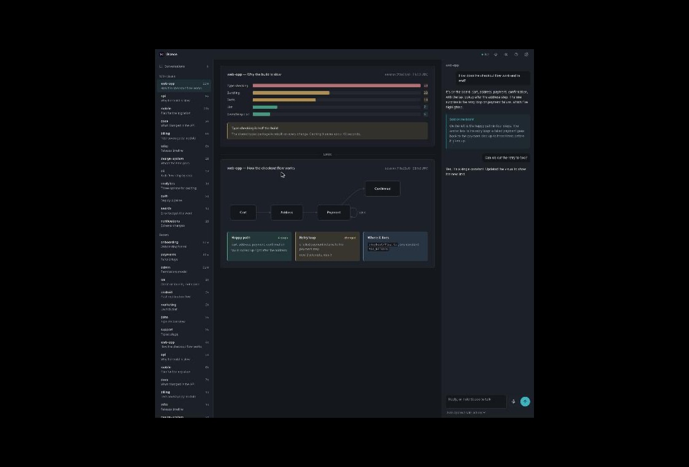

Glance is a page beside Claude Code. Every answer that's more than a one-liner lands there as a picture, and a voice talks you through it. Every session you have open, in one place. Free, local, open source.

Claude Code keeps working exactly as it does. Glance adds a second screen that makes the answers easier to take in.
Explanations, plans, reviews and status become cards, flows, timelines and charts, drawn with a compact block language plus Mermaid.
Each visual comes with a spoken narration, so you can look at the picture instead of reading. Press Escape to stop.
Run five Claude Code sessions in five terminals and they all show up here. See who's waiting on you, and reply to any of them.
Hold the space bar, say what you want, let go. The answer is spoken back. Chat runs through your own Claude login.
Keep the full Claude Code answer in the terminal and get the board on top, or make the board the answer. Turn it all off with one switch.
A small Node server with no dependencies, serving a page on localhost. Your sessions, your visuals and your history stay in your home folder.
You need Claude Code and Node, which you already have. Voice uses the built-in macOS speech engine.
/plugin marketplace add adeiji/glance /plugin install glance@glance
Or from a shell: claude plugin marketplace add adeiji/glance then claude plugin install glance@glance.
/glance:open
That starts the server and opens http://127.0.0.1:4777. A short tour shows you around.
Every new session already knows how to draw on the board. Nothing to add to your CLAUDE.md. The first time, Claude asks once for permission to write the board file; allow it always.
Glance adds work to each answer, so it adds tokens. Here is the honest shape of it, so you can decide.
The rules Glance gives Claude are about 1,000 tokens of input, added when a session starts. Claude reads the block-language reference once, another thousand or so. Both are cached after the first use.
Each picture is roughly 500 to 900 output tokens, narration included, plus one extra tool call. Quick one-line answers don't get a visual and cost nothing extra.
In full mode the terminal answer stays, so output for an explanation roughly doubles. In short mode the terminal gets one line, so the total is about 20 to 50 percent more than plain Claude Code.
Measured on one typical explain-this question: plain Claude Code used about 620 output tokens. Hand-drawn SVG diagrams would cost around 2,500 tokens each; the block language was designed so a visual costs a fraction of that. If a session can't write the board (a locked-down permission mode, for example), Claude falls back to a text answer. The off switch removes the overhead entirely.
Only the shape of the answer. Claude still works in your terminal as before. For anything beyond a quick reply it also writes a visual to the board with a narration. You choose whether the terminal keeps the full answer or just a pointer.
Run /glance:off in any session, or flip the switch at the top of settings. New sessions are then plain Claude Code until you run /glance:on. To remove it: /plugin uninstall glance@glance.
No. It's free and MIT licensed. The server runs on your machine and talks only to the Claude Code command you already use. The visual block language was designed to be cheap in tokens, about a sixth of a hand-drawn diagram.
Yes. Glance doesn't care where a session was started. Anything running Claude Code with the plugin enabled appears on the board.
The board, chat and push-to-talk work anywhere Chrome runs. Spoken narration uses the macOS speech engine, so on other systems the board is silent for now.